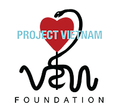

Charitable Giving |
||
Together, we can make a difference |
||
At Wells Fargo, we’re committed to providing community solutions – local responses to local needs. We promote economic development and self-sufficiency through community development, financial education, cash contributions, affordable housing, environmental stewardship, and through the efforts of our enthusiastic team member volunteers. For philanthropic activities and investments last year, Wells Fargo reached important milestones:
And now, by working together with you, we can make a difference in our international communities. You are invited, for the third year in a row, to cast a vote for one of four nonprofits (noted below) that make a difference around the world. Based on this poll held at our Wells Fargo Sibos reception, Wells Fargo will donate a total of USD$10,000 to these four charities. |
learn more |
|
Click on each nonprofit to learn more:
|
||
NOTE: AS WITH EXPLORE DUBAI PAGE, EACH EXTERNAL LINK EITHER NEEDS INTERSTITIAL PAGE OR AN ICON REFERENCING A DISCLOSURE STATEMENT.
“By joining a giving club through the BreadTin, I know I can create a bigger impact on the selected charity and have more influence on the charitable project than I’d have if I were to donate on my own. Our selected charity and its beneficiaries receive their much needed financial support, whilst I have gained experience in team-work and negotiation skills. I have also met like-minded people who have become friends through sharing the same values whilst supporting our dedicated mission to help people less privileged.” — Loretta Wong, London Branch
“ARC is building a 21st Century
humanitarian organization rooted in co-creating with committed people to provide more meaningful
solutions to humanitarian crises worldwide. My work with ARC had me engaged in facilitating
meaningful partnerships between ARC and Middle Eastern NGO counterparts to engage in projects in
Sudan and Somalia. — Adel el-Huni, GFI DIFC Branch
“The teachers at DCSN are truly amazing and treat all the kids with love and compassion. One thing I learnt from them; you can embrace life and have fun, no matter your circumstances.” — Dalene Byrnes, GFI DIFC Branch  Project Vietnam Foundation works on creating sustainable pediatric healthcare in Vietnam, while providing free healthcare and aid to impoverished rural areas across the country. (Human Services) “Apart from providing free surgery, dental and medical checks for poor children in rural areas, Project Vietnam has multiplied its ability to provide sustainable medical support to kids through its strategy to train the trainers. Over the last 3 years, 200 instructors and 3,000 health care workers have been trained at 14 training centers across the country. A simple set of devices and a trained health worker can save a baby at birth.” — Linh Trinh, GFI Vietnam office |
||